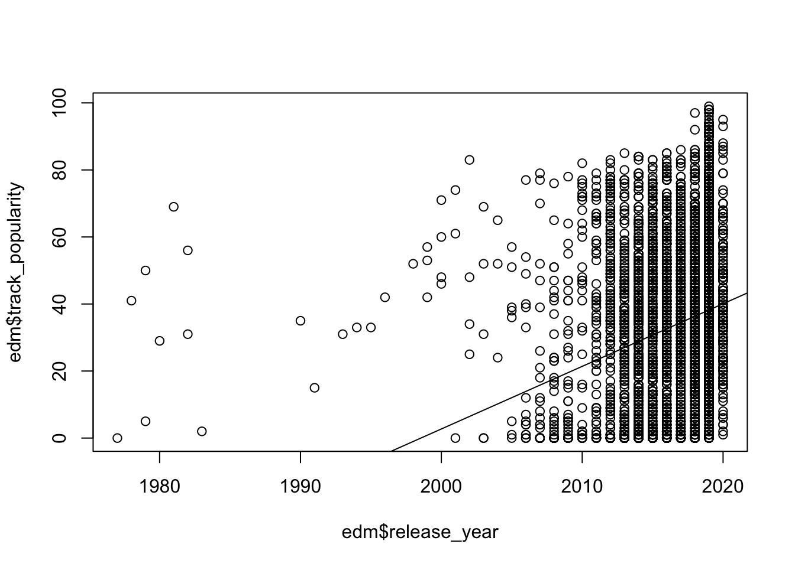
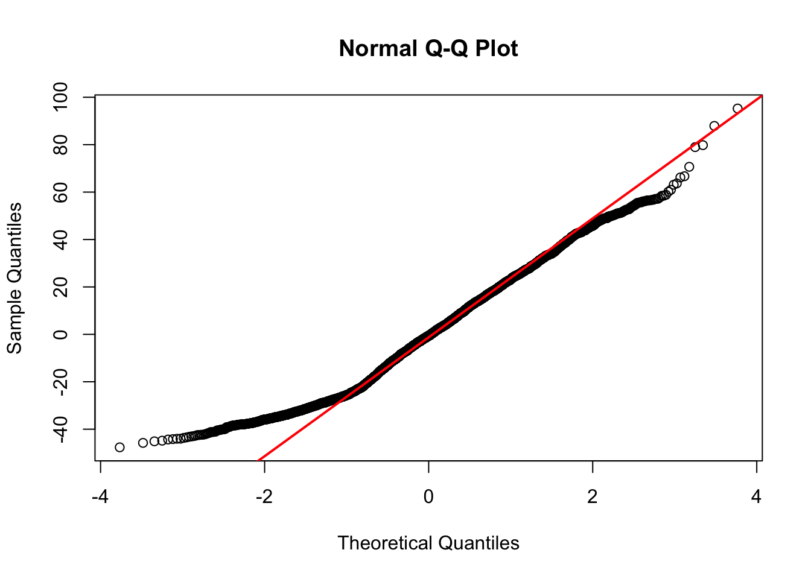

2.2 EDM as Study Music & Popularity
Additionally, empirical evidence from experimental research indicates that musical activities with high levels of perceived pleasure and high engagement in movement can induce a cognitive flow state, particularly in a performance context (e.g., Loepthien and Leipold 2022).
Given the observations show a significantly increasing preference for instrumental music, especially EDM, as background music during cognitive tasks on Spotify(e.g., Masha 2021; Spotify 2021), this trend could suggest that such preferences significantly drive the popularity of EDM songs.
If this “bold hypothesis” is considered valid, the following assumptions can be made:
H3: EDM songs with higher levels of valence and danceability will have a higher popularity ranking.
H4: It can also be assumed, based on the “popularity plot,” that EDM songs released more recently will have a higher popularity ranking.
reg_1<-lm(track_popularity~release_year+danceability+valence,edm)
stargazer(reg_1,type="text",star.cutoffs=c(.05,.01,.001))##
## =================================================
## Dependent variable:
## -----------------------------
## track_popularity
## -------------------------------------------------
## release_year 1.869***
## (0.087)
##
## danceability -9.099***
## (2.488)
##
## valence 17.389***
## (1.365)
##
## Constant -3,734.456***
## (174.714)
##
## -------------------------------------------------
## Observations 6,043
## R2 0.088
## Adjusted R2 0.088
## Residual Std. Error 22.117 (df = 6039)
## F Statistic 194.241*** (df = 3; 6039)
## =================================================
## Note: *p<0.05; **p<0.01; ***p<0.001## Warning in abline(reg_1): only using the first two of 4 regression coefficients
An interesting issue arises due to the sampling pattern of the “spotifyr” package. In the visualization example illustrating the relationship between track popularity and release year for EDM music, it is observed that:
Heteroscedasticity: the variance of the residuals seems to increase with the increasing release year. This can be seen from the increasingly dispersed trend of the scatter plot, especially after the year 2000, where the dispersion of the residuals noticeably increases.
Non-linear relationship: the distribution of the data might suggests the possibility of a non-linear relationship.
Additionally, a Q-Q plot was utilized to examine whether the residual distribution approximate a normal distribution.

It can be seen from the points at the ends deviate from the reference line, especially at the right end of the plot, indicating potential skewness in the residual distribution at the extreme values of the data, suggesting that the tail weight of the residual distribution does not match that of a normal distribution.
It can be concluded that simple linear model might not be BLUE model here to examine the hypothesized relationship.
Additionally, a White’sRobust Standard Errors is utilized for correcting estimates of OLS regression coefficients of release year in the presence of heteroskedasticity.The adjustment resulted in a slightly different standard error for the release year coefficient.
## Estimate Std. Error t value Pr(>|t|)
## 1.868585e+00 1.417803e-01 1.317944e+01 3.981126e-39##
## Call:
## lm(formula = track_popularity ~ release_year + danceability +
## valence, data = edm)
##
## Residuals:
## Min 1Q Median 3Q Max
## -47.65 -18.15 -0.60 15.68 95.25
##
## Coefficients:
## Estimate Std. Error t value Pr(>|t|)
## (Intercept) -3.734e+03 1.747e+02 -21.375 < 2e-16 ***
## release_year 1.869e+00 8.661e-02 21.574 < 2e-16 ***
## danceability -9.099e+00 2.488e+00 -3.657 0.000257 ***
## valence 1.739e+01 1.365e+00 12.741 < 2e-16 ***
## ---
## Signif. codes: 0 '***' 0.001 '**' 0.01 '*' 0.05 '.' 0.1 ' ' 1
##
## Residual standard error: 22.12 on 6039 degrees of freedom
## Multiple R-squared: 0.088, Adjusted R-squared: 0.08755
## F-statistic: 194.2 on 3 and 6039 DF, p-value: < 2.2e-162.2.1 Conclusion From OLS
Although the results from OLS suggest that simple linear model might not be the best fit for the given data, it can still be concluded from the OLS regressions that:
-1. Release Year: holding other variables constant, for each additional release year, the popularity scores of EDM songs increases by approximately 1.869 points, suggesting newer EDM songs tend to be more popular, supporting hypothesis 4.
-2. Danceability: contrary to what might be expected, a significant but negative relationship between danceability feature and track popularity score. For each additional 0.1 increase in danceability score, the track’s popularity would decrease by approximately 0.9099 points.
-3. Valence: a significant and strongly positive relationship exists between valence and track popularity score, predicted by the model. Holding others constant, for each additioanl 0.1 increase in valence score, the track’s popularity scores would increase by approximately 1.7389 points.
-4. R-squared: approximately only 8.8% of the variability in track popularity can be explained when utilizing a simple linear model.
-5. F Statistic: with a 194.24 f-statistic score, indicating that the model as a whole is statistically significant.
Overall, the OLS regression supports Hypothesis 4 (H4) and partially supports Hypothesis 3 (H3). Contrary to the original hypothesis regarding the relationship between danceability and popularity, this might be due to two reasons: 1) Danceability might be inversely correlated with other musical features that affect popularity. 2) Users in a studying context might prefer less danceable tracks for background listening. Additionally, issues with model fit, as indicated by the residual analysis and regression diagnostics, suggest that further investigation with more complex models or additional variables might be necessary for a more comprehensive understanding of what drives the popularity of EDM songs.